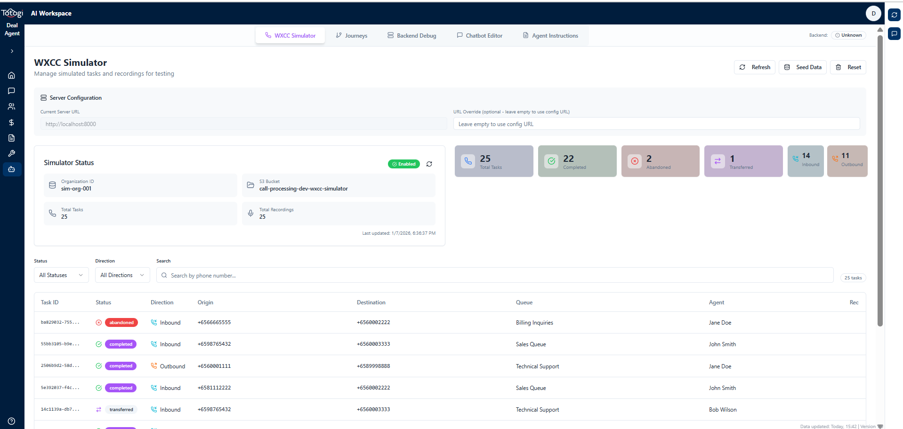
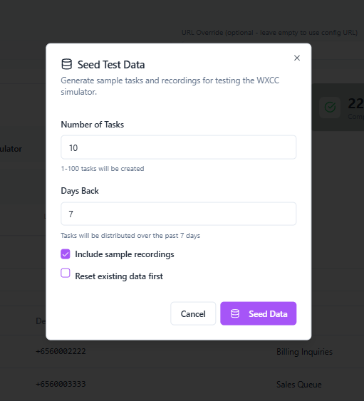
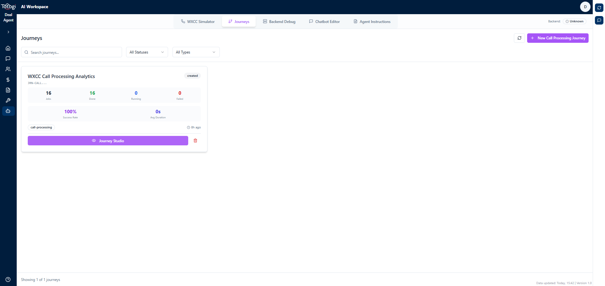
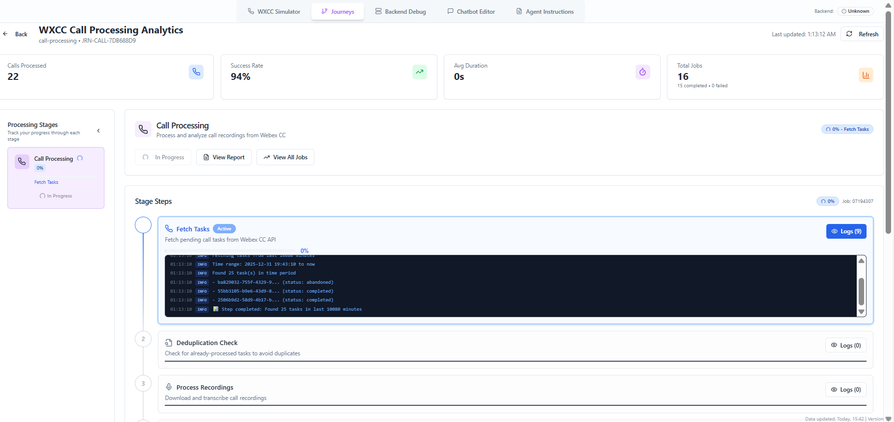

Call Processing Developer Guide¶
A comprehensive guide for developers working with the Call Processing transformation job in the AI Job Engine.
Table of Contents¶
- Architecture Overview
- Component Structure
- Code Deep Dive
- Making Changes
- Configuration
- Testing Strategies
- Using the WXCC Simulator
- Testing via UI (Journey Studio)
- CLI Testing & Scripts
- Troubleshooting
Architecture Overview¶
The Call Processing Stage is a transformation job that processes Webex Contact Center (WXCC) calls through a 6-step pipeline:
┌─────────────────────────────────────────────────────────────────────────────┐
│ CALL PROCESSING PIPELINE │
├─────────────────────────────────────────────────────────────────────────────┤
│ │
│ Webex CC API ──► Fetch Tasks ──► Deduplicate ──► Process Recordings│
│ │
│ Register Metadata ◄── Transcribe ◄──┘ │
│ │ │
│ ▼ │
│ AI Analysis ──► S3 + Glue Catalog │
│ │ │
│ ▼ │
│ CRM Actions ──► Salesforce (Leads/Opportunities) │
│ │
└─────────────────────────────────────────────────────────────────────────────┘
Pipeline Steps¶
| Step | Name | Description | Duration |
|---|---|---|---|
| 1 | Fetch Tasks | Query Webex CC for telephony tasks in time window | ~1m |
| 2 | Deduplication | Check DynamoDB for previously processed task IDs | ~30s |
| 3 | Process Recordings | Download recordings, transcribe, upload to S3 | ~5m |
| 4 | Register Metadata | Create JSON metadata, register Glue partitions | ~1m |
| 5 | AI Analysis | Run GPT analysis on transcripts, store results | ~3m |
| 6 | CRM Actions | Create/update Salesforce leads and opportunities | ~2m |
Integration with AI Job Engine¶
The Call Processing Stage integrates with the AI Job Engine through:
┌──────────────────────────────────────────────────────────────────┐
│ Job Execution Lifecycle │
└──────────────────────────────────────────────────────────────────┘
User/UI Trigger → TransformationJobExecutor.start_job_execution()
│
▼
Generate Job ID (JOB-001-20260108120000)
│
▼
Create job record in DynamoDB
│
▼
Load CallProcessStage class
│
▼
Execute each step sequentially
│
├── Step completion → Upload logs to S3
├── Step completion → Upload report to S3
└── Step completion → Update DynamoDB progress
│
▼
Complete job (100% progress)
Component Structure¶
Directory Layout¶
src/stages/call-process/
├── __init__.py # Package exports (CallProcessStage)
├── call_process_stage.py # Stage wrapper for journey integration
└── call_processor.py # Core processing logic
scripts/call-scripts/
├── ai_analyzer.py # GPT-powered call analysis
├── sfdc_client.py # Salesforce API integration
├── task_tracker.py # DynamoDB deduplication
├── wxcc_api.py # Webex CC API client
├── transcriber.py # Audio transcription
├── glue_catalog.py # AWS Glue registration
├── secrets_provider.py # Secrets management
├── process_calls.py # Standalone CLI script
├── setup_glue.py # Glue table setup
└── clean_glue_data.py # Data cleanup utility
scripts/wxcc-simulator/
├── seed_simulator.py # Simulator seeding script
└── recordings/ # Sample audio files
Class Hierarchy¶
┌─────────────────────────────────────────────────────────────────────────────┐
│ COMPONENT ARCHITECTURE │
├─────────────────────────────────────────────────────────────────────────────┤
│ │
│ ┌─────────────────────────────────────────────────────────────────────┐ │
│ │ CallProcessStage │ │
│ │ (extends BaseStage for journey integration) │ │
│ │ │ │
│ │ • execute_step(step_id, step_data) │ │
│ │ • Logging & metrics via BaseStage │ │
│ │ • S3 log/report upload │ │
│ └────────────────────────────────┬────────────────────────────────────┘ │
│ │ │
│ │ uses │
│ ▼ │
│ ┌─────────────────────────────────────────────────────────────────────┐ │
│ │ CallProcessor │ │
│ │ (core processing logic) │ │
│ │ │ │
│ │ • fetch_tasks() │ │
│ │ • check_deduplication() │ │
│ │ • process_recordings() │ │
│ │ • register_metadata() │ │
│ │ • run_ai_analysis() │ │
│ │ • run_crm_actions() │ │
│ │ • generate_execution_report() │ │
│ └────────────────────────────────┬────────────────────────────────────┘ │
│ │ │
│ ┌─────────────────────────┼─────────────────────────┐ │
│ │ │ │ │
│ ▼ ▼ ▼ │
│ ┌────────────────┐ ┌────────────────┐ ┌────────────────┐ │
│ │ WXCCAPI │ │ TaskTracker │ │ AIAnalyzer │ │
│ │ (Webex CC API) │ │ (DynamoDB) │ │ (OpenAI GPT) │ │
│ └────────────────┘ └────────────────┘ └────────────────┘ │
│ │
│ │ │
│ ▼ │
│ ┌────────────────────┐ │
│ │ SFDCClient │ │
│ │ (Salesforce API) │ │
│ └────────────────────┘ │
│ │
└─────────────────────────────────────────────────────────────────────────────┘
Code Deep Dive¶
CallProcessStage (Stage Wrapper)¶
File: src/stages/call-process/call_process_stage.py
This class extends BaseStage and provides the journey integration layer:
class CallProcessStage(BaseStage):
"""
Call Processing Stage for Webex CC call analytics.
This stage processes calls from Webex Contact Center by:
- Fetching tasks for a specified time period
- Checking for already-processed tasks (deduplication)
- Downloading and transcribing recordings
- Uploading to S3 and registering in Glue catalog
- Running AI-powered analysis on transcripts
- Creating/updating Salesforce CRM records
"""
Key Properties:
| Property | Type | Description |
|---|---|---|
stage_name |
str | "Call Processing" |
stage_description |
str | Human-readable description |
steps |
List[Dict] | List of 6 step definitions |
Key Methods:
| Method | Purpose |
|---|---|
execute_step(step_id, step_data) |
Main entry point for step execution |
_ensure_processor(step_data) |
Lazy initialization of CallProcessor |
_execute_fetch_tasks(step_data) |
Execute Step 1 |
_execute_deduplication(step_data) |
Execute Step 2 |
_execute_process_recordings(step_data) |
Execute Step 3 |
_execute_register_metadata(step_data) |
Execute Step 4 |
_execute_ai_analysis(step_data) |
Execute Step 5 |
_execute_crm_actions(step_data) |
Execute Step 6 |
CallProcessor (Core Logic)¶
File: src/stages/call-process/call_processor.py
This class contains all the business logic:
class CallProcessor:
"""
Core call processing logic.
This class provides methods for each step of the call processing workflow:
1. Fetch tasks from Webex CC
2. Check for already-processed tasks (deduplication)
3. Process recordings (download, transcribe, upload)
4. Register metadata in Glue
5. Run AI analysis on transcripts
6. Execute CRM actions
"""
State Management:
The processor maintains state across steps:
# Processing state
self.tasks = [] # Tasks from Webex CC
self.task_data_map = {} # Task ID → Task data mapping
self.new_task_ids = [] # IDs of tasks to process
self.skipped_task_ids = [] # IDs of already-processed tasks
self.processed_results = [] # Successfully processed tasks
self.failed_results = [] # Failed tasks
self.transcripts = [] # Collected transcripts
self.analysis_results = {} # AI analysis results
# CRM state
self.crm_results = [] # All CRM action results
self.leads_created = [] # Task IDs with created leads
self.leads_converted = [] # Task IDs with converted leads
CallProcessConfig¶
File: src/stages/call-process/call_processor.py
Configuration dataclass:
@dataclass
class CallProcessConfig:
minutes_back: int = 10080 # 7 days (7 * 24 * 60)
transcribe: bool = True # Enable transcription
register_glue: bool = True # Enable Glue registration
run_analysis: bool = True # Enable AI analysis
run_crm_actions: bool = True # Enable CRM actions
s3_bucket: str = "" # S3 bucket for storage
skip_processed: bool = True # Enable deduplication
aws_region: str = "ap-southeast-1"
Making Changes¶
Adding a New Processing Step¶
- Add step definition in
CallProcessStage.steps:
@property
def steps(self) -> List[Dict[str, Any]]:
return [
# ... existing steps ...
{
'id': 'new_step',
'name': 'New Step Name',
'description': 'Description of what this step does',
'order': 6, # Increment as needed
'estimatedDuration': '1m',
},
]
- Add execution method in
CallProcessStage:
def _execute_new_step(self, step_data: Dict[str, Any]) -> Dict[str, Any]:
step_id = 'new_step'
self._log_local('INFO', '🆕 Starting new step', step_id)
result = self.processor.run_new_step() # Call processor method
# Set metrics
self.set_metric('items_processed', result.get('count', 0), step_id)
# Add artifacts
self.add_artifact('step_output', result.get('data', {}), step_id)
self._log_local('INFO', f"📊 Step completed: {result.get('summary', '')}", step_id)
return result
- Add dispatch in
execute_step:
def execute_step(self, step_id: str, step_data: Dict[str, Any]) -> Dict[str, Any]:
# ... existing code ...
elif step_id == 'new_step':
result = self._execute_new_step(step_data)
- Implement core logic in
CallProcessor:
def run_new_step(self) -> Dict[str, Any]:
"""
Step N: Description of what this step does.
Returns:
Dict with step results
"""
self._log('INFO', "Starting new step processing", 'new_step')
# Your processing logic here
return {
'status': 'completed',
'step_id': 'new_step',
'summary': 'Step completed successfully',
'count': len(items_processed)
}
Modifying AI Analysis¶
File: scripts/call-scripts/ai_analyzer.py
To change the AI analysis prompts or logic:
class AIAnalyzer:
async def analyze_call_comprehensive(
self,
segments: List[Dict],
call_id: str,
metadata: Dict = None
) -> Dict[str, Any]:
"""
Run comprehensive analysis on a call transcript.
Modify the system_prompt or user_prompt to change analysis behavior.
"""
Modifying CRM Logic¶
File: src/stages/call-process/call_processor.py
CRM validation rules are in _apply_crm_validation_rules:
def _apply_crm_validation_rules(self, crm_analysis: Dict[str, Any]) -> Dict[str, Any]:
"""
Apply validation rules to determine appropriate CRM action.
Decision Matrix:
- new_lead: Valid company, BRN, qualified inquiry
- lead_conversion: Transcript contains Lead ID (00Q...)
- renewal_opportunity: Existing customer, no Lead ID
- skip_revenue_flagged: Customer is revenue-flagged
- skip_insufficient: Missing critical data
- skip_consumer: Non-enterprise customer
"""
Changing S3 Storage Structure¶
File: scripts/call-scripts/wxcc_api.py
S3 paths are defined in process_task_unified:
# Current structure:
s3://{bucket}/
├── call-detail/{task_id}/
│ ├── recording.wav
│ ├── transcript.json
│ ├── analysis.json
│ └── sfdc_action.json
└── call-data/year={YYYY}/month={MM}/day={DD}/hour={HH}/
└── {task_id}.json # Glue-partitioned metadata
Configuration¶
Setting Up .env.local for Local Development¶
Create a .env.local file in the project root (starhub-backend/.env.local) with all required credentials.
Complete .env.local Template¶
# =============================================================================
# AWS Configuration
# =============================================================================
# AWS Region
AWS_REGION=ap-southeast-1
# Capability and Environment (used for naming convention)
CAPABILITY_NAME=call-processing
ENVIRONMENT=dev
# Secrets Backend (false = use local .env.local, true = use AWS Secrets Manager)
USE_AWS_SECRETS=false
# =============================================================================
# WEBEX CONTACT CENTER OAUTH CREDENTIALS
# =============================================================================
# To obtain these credentials:
# 1. Go to https://developer.webex.com/
# 2. Log in with your Webex account
# 3. Navigate to "My Webex Apps" → Create a New App → Integration
# 4. Select scopes: cjp:config_read, cjp:user_read, cjp:recording_read
# 5. Set Redirect URI to match your environment
# Webex OAuth Client ID (from Webex Developer Portal)
WEBEX_CLIENT_ID=C1234567890abcdef1234567890abcdef12345678
# Webex OAuth Client Secret (from Webex Developer Portal)
WEBEX_CLIENT_SECRET=abcdef1234567890abcdef1234567890abcdef1234567890abcdef1234567890
# OAuth Redirect URI (must match what's configured in Webex Developer Portal)
WEBEX_REDIRECT_URI=https://localhost:8000/callback
# WXCC Organization ID (your Webex Contact Center org)
# Find this in: Control Hub → Contact Center → Settings → General
WXCC_ORG_ID=12345678-abcd-1234-abcd-1234567890ab
# WXCC API Base URL (depends on your region)
# US: https://api.wxcc-us1.cisco.com/v1
# EU: https://api.wxcc-eu1.cisco.com/v1
# ANZ: https://api.wxcc-anz1.cisco.com/v1
WXCC_BASE_URL=https://api.wxcc-us1.cisco.com/v1
# =============================================================================
# SALESFORCE OAUTH CREDENTIALS
# =============================================================================
# To obtain these credentials:
# 1. Go to Salesforce Setup → App Manager → New Connected App
# 2. Enable OAuth Settings
# 3. Select scopes: api, refresh_token, full
# 4. Save and note the Consumer Key (Client ID) and Consumer Secret
# Enable/disable Salesforce simulator mode
# Set to "true" for testing without real Salesforce, "false" for production
SFDC_SIMULATOR_ENABLED=true
# Salesforce Instance URL
# Production: https://login.salesforce.com
# Sandbox: https://test.salesforce.com
# My Domain: https://yourcompany.my.salesforce.com
SFDC_INSTANCE_URL=https://test.salesforce.com
# Salesforce API Version (check your org's supported versions)
SFDC_API_VERSION=v59.0
# Salesforce Connected App Client ID (Consumer Key)
SFDC_CLIENT_ID=3MVG9abcdefghijklmnopqrstuvwxyz1234567890
# Salesforce Connected App Client Secret (Consumer Secret)
SFDC_CLIENT_SECRET=ABCDEF1234567890ABCDEF1234567890
# Salesforce Username (the user that will make API calls)
SFDC_USERNAME=integration.user@yourcompany.com
# Salesforce Password
SFDC_PASSWORD=YourPassword123
# Salesforce Security Token (from User Settings → Reset Security Token)
# Append to password for authentication: password + security_token
SFDC_SECURITY_TOKEN=ABCDEFGHIJ1234567890
# =============================================================================
# OPENAI CONFIGURATION
# =============================================================================
# To obtain API key:
# 1. Go to https://platform.openai.com/
# 2. Navigate to API Keys → Create new secret key
# OpenAI API Key (required for transcription and AI analysis)
OPENAI_API_KEY=sk-proj-1234567890abcdefghijklmnopqrstuvwxyz
# Transcription model
OPENAI_TRANSCRIPTION_MODEL=gpt-4o-transcribe
# =============================================================================
# S3 STORAGE CONFIGURATION
# =============================================================================
# S3 bucket for storing recordings, transcripts, and metadata
S3_RECORDINGS_BUCKET=call-processing-dev-recordings
# S3 prefixes (usually don't need to change)
S3_CALL_DATA_PREFIX=call-data/
S3_CALL_DETAIL_PREFIX=call-detail/
# =============================================================================
# AWS GLUE CONFIGURATION
# =============================================================================
# Glue database name for analytics
GLUE_DATABASE_NAME=call-processing-dev-wxcc-analytics
# Glue table name
GLUE_TABLE_NAME=calls
# =============================================================================
# DYNAMODB TASK TRACKING
# =============================================================================
# DynamoDB table for deduplication tracking
DYNAMODB_TRACKING_TABLE=call-processing-dev-wxcc-task-tracking
# Task record TTL in days
TASK_TRACKING_TTL_DAYS=30
# =============================================================================
# WXCC SIMULATOR CONFIGURATION (for testing)
# =============================================================================
# Enable simulator mode (bypasses real Webex API)
WXCC_SIMULATOR_ENABLED=true
# Simulator API URL
WXCC_SIMULATOR_BASE_URL=http://localhost:8000/api/v1/simulator
# Simulator credentials (fixed values for testing)
WXCC_SIM_ORG_ID=sim-org-001
WXCC_SIM_TOKEN=test-token-12345
WXCC_SIMULATOR_BUCKET=call-processing-dev-recordings
WXCC_SIMULATOR_PREFIX=wxcc-simulator
# =============================================================================
# LOGGING
# =============================================================================
LOG_LEVEL=INFO
Obtaining Webex CC OAuth Credentials¶
Step 1: Create a Webex Integration¶
- Navigate to Webex Developer Portal
- Sign in with your Webex account (must have Contact Center admin access)
- Go to My Webex Apps → Create a New App → Create an Integration
Step 2: Configure OAuth Scopes¶
Select the following scopes:
| Scope | Description |
|---|---|
cjp:config_read |
Read Contact Center configuration |
cjp:user_read |
Read user/agent information |
cjp:recording_read |
Access call recordings |
cjp:analyzer_read |
Read analytics data |
Step 3: Set Redirect URI¶
- For local development:
http://localhost:8000/callback - For production: Your actual callback URL
Step 4: Save Credentials¶
After creating the integration, note down:
- Client ID:
WEBEX_CLIENT_ID - Client Secret:
WEBEX_CLIENT_SECRET - Redirect URI:
WEBEX_REDIRECT_URI
Step 5: Get Organization ID¶
- Log in to Webex Control Hub
- Navigate to Contact Center → Settings → General
- Copy the Organization ID:
WXCC_ORG_ID
Step 6: Create tokens.json¶
Create a tokens.json file in scripts/call-scripts/ with your OAuth tokens:
{
"access_token": "your_access_token_here",
"refresh_token": "your_refresh_token_here",
"expires_at": 1704672000,
"expires_in": 43199,
"token_type": "Bearer"
}
Note: You can obtain initial tokens by running the OAuth flow manually or using the Webex Developer Portal's "Try It" feature.
Obtaining Salesforce OAuth Credentials¶
Step 1: Create a Connected App¶
- Log in to Salesforce Setup
- Navigate to App Manager → New Connected App
- Fill in:
- Connected App Name:
Call Processing Integration - API Name:
Call_Processing_Integration - Contact Email: Your email
Step 2: Enable OAuth Settings¶
- Check Enable OAuth Settings
- Set Callback URL:
https://localhost:8000/callback(or your callback) - Select OAuth Scopes:
api- Access and manage your datarefresh_token- Perform requests at any timefull- Full access to your data
Step 3: Save and Get Credentials¶
After saving:
- Consumer Key →
SFDC_CLIENT_ID - Consumer Secret →
SFDC_CLIENT_SECRET(click to reveal)
Step 4: Get Security Token¶
- Go to User Settings → Reset My Security Token
- Check your email for the new token
- Use this as
SFDC_SECURITY_TOKEN
Salesforce Authentication Flow¶
For username-password OAuth flow, the password sent is: password + security_token
# Example authentication (for testing)
curl -X POST https://login.salesforce.com/services/oauth2/token \
-d "grant_type=password" \
-d "client_id=${SFDC_CLIENT_ID}" \
-d "client_secret=${SFDC_CLIENT_SECRET}" \
-d "username=${SFDC_USERNAME}" \
-d "password=${SFDC_PASSWORD}${SFDC_SECURITY_TOKEN}"
Environment Variables Reference¶
| Variable | Description | Default |
|---|---|---|
AWS_REGION |
AWS region | ap-southeast-1 |
S3_RECORDINGS_BUCKET |
S3 bucket for recordings | Required |
GLUE_DATABASE_NAME |
Glue database name | {capability}-{env}-wxcc-analytics |
GLUE_TABLE_NAME |
Glue table name | calls |
OPENAI_API_KEY |
OpenAI API key | Required for analysis |
WXCC_SIMULATOR_ENABLED |
Enable WXCC simulator | false |
WXCC_SIMULATOR_BASE_URL |
Simulator URL | http://localhost:8000/api/v1/simulator |
SFDC_SIMULATOR_ENABLED |
Enable SFDC simulator | true |
SFDC_INSTANCE_URL |
Salesforce login URL | https://login.salesforce.com |
Using Simulator Mode (Recommended for Development)¶
For local development without real Webex/Salesforce credentials, enable simulator mode:
This allows you to: - Test the full pipeline without real API credentials - Generate mock call data with the simulator seeder - Validate CRM logic without affecting real Salesforce data
Config Provider¶
The config_provider.py centralizes all configuration:
from src.config.config_provider import get_config
config = get_config()
print(config.s3_recordings_bucket)
print(config.openai_api_key)
Step Configuration via Journey Metadata¶
Pass configuration in step_data when executing:
step_data = {
'config': {
'minutes_back': 10080, # 7 days
'transcribe': True,
'register_glue': True,
'run_analysis': True,
'run_crm_actions': True,
's3_bucket': 'my-bucket',
'skip_processed': True,
}
}
Testing Strategies¶
Test Levels¶
┌─────────────────────────────────────────────────────────────────┐
│ TESTING PYRAMID │
├─────────────────────────────────────────────────────────────────┤
│ │
│ ┌───────────────┐ │
│ │ E2E/UI │ Journey Studio Tests │
│ │ Tests │ │
│ └───────┬───────┘ │
│ │ │
│ ┌────────────┴────────────┐ │
│ │ Integration Tests │ CLI + Simulator │
│ │ (with Simulator) │ │
│ └────────────┬────────────┘ │
│ │ │
│ ┌───────────────────┴───────────────────┐ │
│ │ Unit Tests │ pytest │
│ │ (mocked dependencies) │ │
│ └───────────────────────────────────────┘ │
│ │
└─────────────────────────────────────────────────────────────────┘
Unit Tests¶
# Run all call processing tests
pytest tests/unit/call_process/ -v
# Run with coverage
pytest tests/unit/call_process/ -v --cov=src/stages/call-process
Integration Tests¶
# Run live call processing test (requires AWS credentials and WXCC)
pytest tests/integration/call_process/test_live_call_processing.py -v --run-live
Using the WXCC Simulator¶
The WXCC Simulator provides a mock Webex Contact Center API for local development and testing.
Setup¶
- Ensure the backend server is running:
- Seed the simulator with test data:
# Seed with 2 tasks using current time (for immediate testing)
python scripts/wxcc-simulator/seed_simulator.py --api http://localhost:8000 --tasks 2 --reset --now
# Seed with 10 tasks spread over 7 days
python scripts/wxcc-simulator/seed_simulator.py --api http://localhost:8000 --tasks 10 --days 7 --reset
Simulator Commands¶
| Command | Purpose |
|---|---|
--api URL |
Gateway URL (e.g., http://localhost:8000) |
--tasks N |
Number of tasks to create |
--days N |
Spread tasks over N days |
--reset |
Clear existing data before seeding |
--now |
Create tasks with current timestamp |
--status |
Show simulator status |
Simulator Dashboard¶
The simulator provides a dashboard showing all seeded tasks and their status:

The Simulator Dashboard displays: - Total tasks in the simulator - Task status breakdown (completed, abandoned, transferred) - Recording availability for each task
Seeding the Simulator¶
When you run the seed command, you'll see detailed output:

The seeding process shows: - Configuration used (tasks, days, recordings) - Tasks created with their IDs and status - Final simulator state summary
Simulator API Endpoints¶
| Endpoint | Method | Description |
|---|---|---|
/api/v1/simulator/status |
GET | Get simulator status |
/api/v1/simulator/seed |
POST | Seed simulator with data |
/api/v1/simulator/reset |
POST | Reset simulator data |
/api/v1/simulator/tasks |
GET | Get tasks (WXCC-compatible) |
Testing via UI (Journey Studio)¶
Prerequisites¶
- Backend server running on port 8000
- Frontend (starhub-ui) running on port 3000
- A Call Processing journey created in the system
Step 1: Seed the Simulator with Test Data¶
Before running the Call Processing job, seed the simulator (see Using the WXCC Simulator section for screenshots):
Step 2: Access Journey Studio¶
Navigate to Journey Studio and select your Call Processing journey:

The Journey Studio shows all stages in your journey. The Call Processing stage appears with its 6 steps.
Step 3: Execute the Call Processing Job¶
In Journey Studio, click "Run Job" on the Call Processing stage:

The UI shows real-time progress as each step executes. You can see: - Step status (pending → in_progress → completed) - Progress percentage - Duration of each step - Step-by-step execution logs - Task processing status - Metrics and statistics - Error messages (if any)
Interpreting Results¶
| Metric | Description |
|---|---|
| Tasks Found | Total tasks in time window |
| New Tasks | Tasks not previously processed |
| Skipped | Already-processed tasks |
| Processed | Successfully processed tasks |
| Failed | Tasks with errors |
| Transcripts | Collected transcripts |
| Analyzed | Calls with AI analysis |
| Leads Created | New Salesforce leads |
CLI Testing & Scripts¶
Complete Testing Workflow¶
Run these commands in sequence for a full end-to-end test:
# 1. Setup Glue infrastructure (first time only)
python scripts/call-scripts/setup_glue.py --delete-table
python scripts/call-scripts/setup_glue.py --create-glue
# 2. Clean existing data (optional - for fresh start)
python scripts/call-scripts/clean_glue_data.py --clean --force --reset-tracker
# 3. Seed the simulator with test tasks
python scripts/wxcc-simulator/seed_simulator.py --api http://localhost:8000 --tasks 2 --reset --now
# 4. Run call processing (standalone CLI)
python scripts/call-scripts/process_calls.py --minutes 10080 --analyze --crm-action
# 5. Run via Job Engine (recommended)
./run_transformation_job.py --journey-id JRN-CALL-7DB688D9 --stage-id call_process
Script Reference¶
setup_glue.py¶
# Create Glue database and table
python scripts/call-scripts/setup_glue.py --create-glue
# Delete existing table
python scripts/call-scripts/setup_glue.py --delete-table
# Show status
python scripts/call-scripts/setup_glue.py --status
clean_glue_data.py¶
# Clean S3 data and reset tracker
python scripts/call-scripts/clean_glue_data.py --clean --force --reset-tracker
# Preview what would be cleaned
python scripts/call-scripts/clean_glue_data.py --dry-run
process_calls.py (Standalone)¶
# Process calls from last 7 days with AI analysis
python scripts/call-scripts/process_calls.py --minutes 10080 --analyze
# Process with CRM actions
python scripts/call-scripts/process_calls.py --minutes 10080 --analyze --crm-action
# Dry run (show what would be processed)
python scripts/call-scripts/process_calls.py --dry-run
# Force reprocess (ignore deduplication)
python scripts/call-scripts/process_calls.py --force
# Show status only
python scripts/call-scripts/process_calls.py --status
run_transformation_job.py (Job Engine)¶
# Run via job engine (creates job record, updates DynamoDB, uploads logs)
./scripts/journey-scripts/run_transformation_job.py \
--journey-id JRN-CALL-7DB688D9 \
--stage-id call_process \
--triggered-by developer \
--reason "Testing call processing"
Integration Tests¶
# Run the live integration test
pytest tests/integration/call_process/test_live_call_processing.py -v --run-live
# Run with verbose output
pytest tests/integration/call_process/test_live_call_processing.py -v --run-live -s
Troubleshooting¶
Common Issues¶
1. "WXCC imports not available"¶
Cause: The scripts/call-scripts path is not in Python path.
Solution:
2. "No tasks found"¶
Cause: Simulator not seeded or time window doesn't match.
Solution:
# Seed with --now flag for current timestamp
python scripts/wxcc-simulator/seed_simulator.py --api http://localhost:8000 --tasks 5 --reset --now
3. "AI analyzer not available"¶
Cause: Missing OpenAI API key.
Solution:
4. "SFDC client not available"¶
Cause: Salesforce credentials not configured.
Solution: Check secrets_provider.py and ensure SFDC credentials are in AWS Secrets Manager.
5. Job stuck at 0% progress¶
Cause: Step execution error before progress update.
Solution: Check logs:
# View local logs
cat logs/call_process_*.log
# View S3 logs
aws s3 ls s3://{bucket}/journeys/{journey-id}/stages/call_process/executions/{job-id}/logs/
Debug Mode¶
Enable verbose logging:
# In CallProcessor
self.log_callback = lambda level, msg, step_id=None: print(f"[{level}] {step_id}: {msg}")
Log Files¶
| Location | Content |
|---|---|
logs/call_process_{job_id}_{timestamp}.log |
Local execution logs |
s3://{bucket}/journeys/.../logs/{step_id}.json |
Per-step logs |
s3://{bucket}/journeys/.../reports/{step_id}.json |
Per-step reports |
External Dependencies¶
| Component | Purpose | Documentation |
|---|---|---|
| Webex CC API | Source of call tasks and recordings | Webex API Docs |
| AWS S3 | Storage for recordings, transcripts, metadata | S3 Docs |
| AWS Glue | Data catalog for analytics | Glue Docs |
| AWS Athena | Query engine for Glue tables | Athena Docs |
| DynamoDB | Task deduplication tracking | DynamoDB Docs |
| OpenAI GPT | AI-powered call analysis | OpenAI Docs |
| Salesforce API | Lead and opportunity management | Salesforce Docs |
Quick Reference¶
File Locations¶
| Purpose | File |
|---|---|
| Stage wrapper | src/stages/call-process/call_process_stage.py |
| Core logic | src/stages/call-process/call_processor.py |
| Base stage | src/stages/base_stage.py |
| Job executor | src/utils/job_executor.py |
| Webex API | scripts/call-scripts/wxcc_api.py |
| AI analyzer | scripts/call-scripts/ai_analyzer.py |
| SFDC client | scripts/call-scripts/sfdc_client.py |
| Simulator seeder | scripts/wxcc-simulator/seed_simulator.py |
Key Commands¶
# Setup
python scripts/call-scripts/setup_glue.py --create-glue
# Seed simulator
python scripts/wxcc-simulator/seed_simulator.py --api http://localhost:8000 --tasks 2 --reset --now
# Run processing
python scripts/call-scripts/process_calls.py --minutes 10080 --analyze --crm-action
# Run via job engine
./scripts/journey-scripts/run_transformation_job.py --journey-id JRN-CALL-xxx --stage-id call_process
# Run tests
pytest tests/integration/call_process/test_live_call_processing.py -v --run-live
Changelog¶
| Date | Version | Changes |
|---|---|---|
| 2026-01-08 | 1.0.0 | Initial developer guide |
Last updated: January 8, 2026